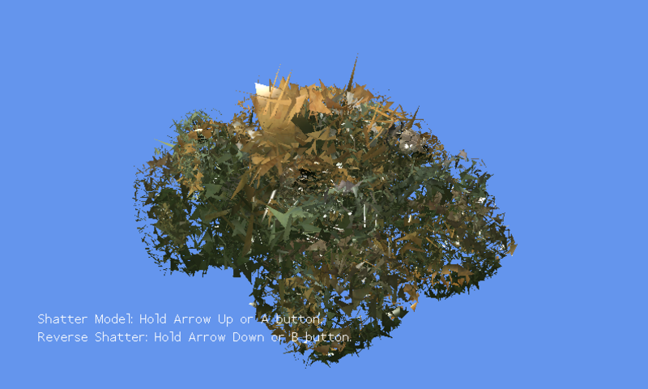

Shatter Effect
Ported from Microsoft's XNA 4.0 Shatter Effect sample.
Source for this sample on GitHub ↗

Play ▸Opens in a new tab.
About this sample
A custom content processor separates every triangle in the tank model and gives each one a center and a random rotation velocity. The original compiled vertex effect rotates the triangles independently, pushes them outward, and drops them as time advances. Hold the reverse control to bring the model back together.
Controls
| Action | Keyboard | Gamepad |
|---|---|---|
| Shatter the model | Hold Up | Hold A |
| Reverse the effect | Hold Down | Hold B |
| Exit | Escape | Back |